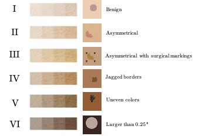
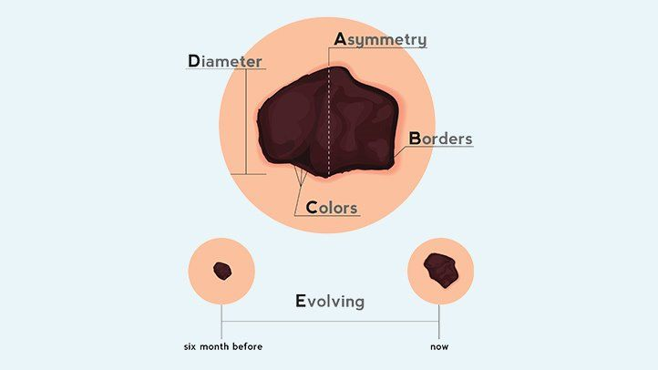

Figure 1. Illustration of SynthDerm dataset that we algorithmically generated. Left: Fitzpatrick scale of skin classification based on melanin density. Right: Benign and melanoma samples that represent different characteristics in the dataset.

Figure 2. A simplified visual guide to the ABCDE of melanoma [2].
SynthDerm (Figure 1) is a synthetically generated dataset inspired by the real-world characteristics of melanoma skin lesions in dermatology settings [1]. These characteristics include whether the lesion is asymmetrical, its border is irregular or jagged, is unevenly colored, has a diameter more than 0.25 inches, or is evolving in size, shape, or color over time. These qualities are usually referred to as ABCDE of melanoma [2] (Figure 2). We generate SynthDerm algorithmically by varying several factors: skin tone, lesion shape, lesion size, lesion location (vertical and horizontal), and whether there are surgical markings present. We randomly assign one of the following to the lesion shape: round, asymmetrical, with jagged borders, or multi-colored (two different shades of colors overlaid with salt-and-pepper noise). For skin tone values, we simulate Fitzpatrick ratings [3]. Fitzpatrick scale is a commonly used approach to classify the skin by its reaction to sunlight exposure modulated by the density of melanin pigments in the skin. This rating has six values, where 1 represents skin that always burns (lowest melanin) and 6 represents skin that never burns in sunlight (highest melanin). For our synthetic generation, we consider six base skin tones that similarly resemble different amounts of melanin. We also add a small amount of random noise to the base color to add further variety. Overall, SynthDerm includes more than 2,600 images of size 64x64.
Files
Below, you can download the newly generated SynthDerm dataset and the accompanying labels.
See here for dataset description in plain text format.
License
MIT License
Copyright (c) 2021 Asma Ghandeharioun
Permission is hereby granted, free of charge, to any person obtaining a copy
of this software and associated documentation files (the "Software"), to deal
in the Software without restriction, including without limitation the rights
to use, copy, modify, merge, publish, distribute, sublicense, and/or sell
copies of the Software, and to permit persons to whom the Software is
furnished to do so, subject to the following conditions:
The above copyright notice and this permission notice shall be included in all
copies or substantial portions of the Software.
THE SOFTWARE IS PROVIDED "AS IS", WITHOUT WARRANTY OF ANY KIND, EXPRESS OR
IMPLIED, INCLUDING BUT NOT LIMITED TO THE WARRANTIES OF MERCHANTABILITY,
FITNESS FOR A PARTICULAR PURPOSE AND NONINFRINGEMENT. IN NO EVENT SHALL THE
AUTHORS OR COPYRIGHT HOLDERS BE LIABLE FOR ANY CLAIM, DAMAGES OR OTHER
LIABILITY, WHETHER IN AN ACTION OF CONTRACT, TORT OR OTHERWISE, ARISING FROM,
OUT OF OR IN CONNECTION WITH THE SOFTWARE OR THE USE OR OTHER DEALINGS IN THE
SOFTWARE.
References
[1] Hensin Tsao, Jeannette M Olazagasti, Kelly M Cordoro, Jerry D Brewer, Susan C Taylor, Jeremy S Bordeaux, Mary-Margaret Chren, Arthur J Sober, Connie Tegeler, Reva Bhushan, et al. Early detection of melanoma: reviewing the ABCDEs. Journal of the American Academy of Dermatology, 72(4):717-723, 2015.
[2] Darrell S Rigel, Robert J Friedman, Alfred W Kopf, and David Polsky. ABCDE-an evolving concept in the early detection of melanoma. Archives of dermatology, 141(8):1032-1034, 2005.
[3] Thomas B Fitzpatrick. The validity and practicality of sun-reactive skin types I through VI. Archives of dermatology, 124(6):869-871, 1988.